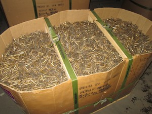

Services
We Buy All Types Of Metals, All Variety's Of Hard & Soft Materials. Materials include:
Red Brass, Yellow Brass, Industrial Brass, Bronze, Bare Copper, Insulated Copper Wiring, Aluminum, Lead, Zinc and Zinc Alloys, Magnesium, Silver, Molybdenum, Stainless Steel, 300 Series, 400 Series, Turnings, Nickel and Nickel Based Alloys, Inconel And Inconel Based Alloys, Monel And Monel Based Alloys, Hastelloy, Titanium and Titanium Based Alloys, Cobalt And Cobalt Based Alloys, Carbide, Tool Steel, Tin, Palladium, Waspaloy, Cupro-Nickel, Computer Chips
For All Other Metals Contact Us For Pricing
There's No Business Too Small For Us To Work With, We Commend Our Attention To Anyone Who Has Scrap Accumulated. With Over 30 Years Of Experience & An Extensive List Of Satisfied Clientele, Our Customer Service Is Second To None.
We Strive To Achieve Solid, Long-Term Relationship's With Our Customers Offering Creative Scrap Management Programs And Competitive Pricing To Ensure Top Value For Their Scrap Metal.
We Have Several High Paying Accounts Overseas Who Buy From Us. In Result, We Can Give Our Customers The Most For Their Scrap. Due To Our Resources Most Scrap Yards In The Country Decide Sell To Us.
Here At NW-Metals We Prioritize in Health & Safety Issues And Are Frequently Recognized For Outstanding Safety Performance. Always Reaching To Maintain Safety Levels With Consistent And Regular Safety Training For Our Valued Employees.
Our Story

Mr. Marcus Riley, the founder of NWM, was born August 13, 1959. At the age of 25, after serving in the US Marine Core, he noticed the rising value of metal with a small warehouse and a vision of success started working with the local businesses. In 1984 NWM Was Established, and Marcus having fulled this vision in one of the top leaders in the scrap metal industry. With his superb attention to detail, and trustworthy resources overseas he has been able to give his customers the most for their scrap. buying from scrap yards, industrial businesses, and other individuals. With over 30 years of experience and an extensive list of satisfied clientele our customer service make NWM second to none!